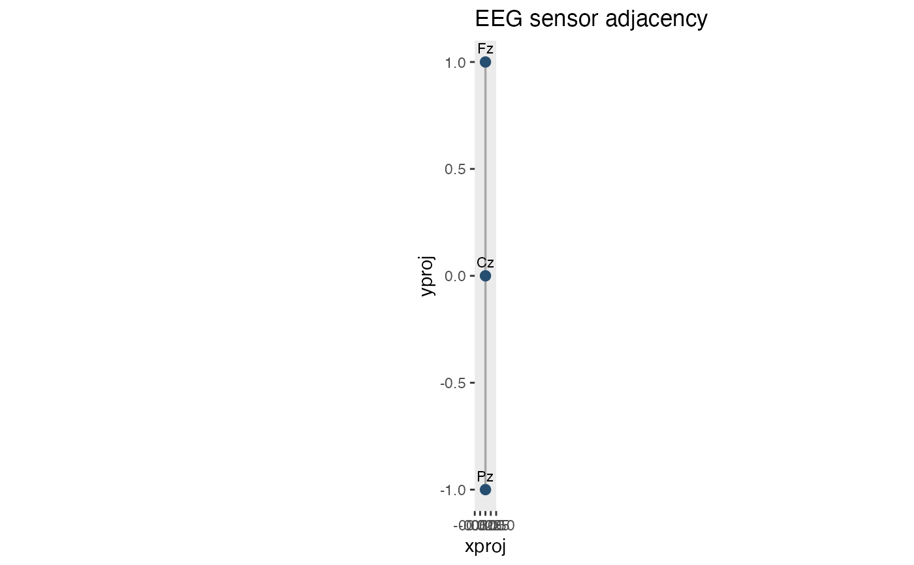

Displays electrode locations and the edges of a supplied adjacency matrix. Sensor coordinates are matched to the matrix by electrode name, so the order of rows in `data` need not match the matrix order. The returned plot can be customized with regular ggplot2 layers and themes.
Usage
plot_sensor_adjacency(
data,
adjacency,
sensor_id = "sensor",
spatial_id = c("xproj", "yproj"),
show_labels = TRUE,
edge_colour = "grey65",
edge_linewidth = 0.6,
point_colour = "#264E70",
point_size = 2.4,
label_size = 3,
check_overlap = TRUE,
show_axes = TRUE
)Arguments
- data
Sensor coordinate table or a sensor-by-time data frame. Repeated sensor rows are allowed when their coordinates are consistent.
- adjacency
Symmetric, named logical or numeric adjacency matrix. Nonzero off-diagonal entries indicate edges. The row and column names must contain exactly the sensor identifiers in `data`.
- sensor_id
Name of the sensor identifier column.
- spatial_id
Character vector of two projected coordinate columns.
- show_labels
Whether to display sensor names.
- edge_colour
Colour of the adjacency edges.
- edge_linewidth
Width of adjacency edges in mm.
- point_colour
Colour of sensor markers.
- point_size
Size of sensor markers.
- label_size
Size of sensor labels in ggplot2 text units.
- check_overlap
If `TRUE`, suppress overlapping sensor labels using ggplot2's `geom_text()` overlap detection.
- show_axes
Whether to show coordinate axes and their labels.
Examples
sensors <- data.frame(
sensor = c("Fz", "Cz", "Pz"),
xproj = c(0, 0, 0),
yproj = c(1, 0, -1)
)
adjacency <- make_sensor_adjacency(sensors, k = 1, distance_factor = 1.5)
plot_sensor_adjacency(sensors, adjacency)
